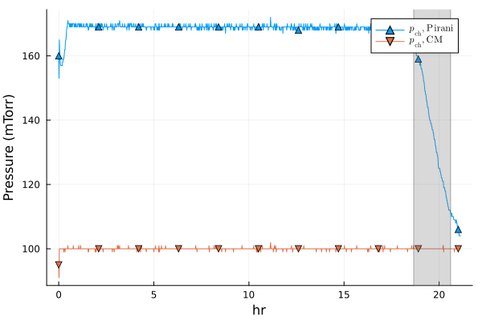
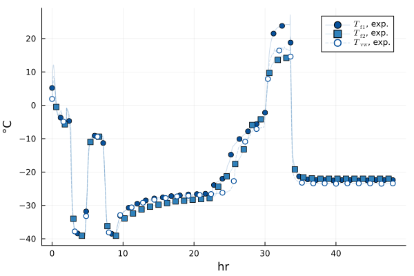
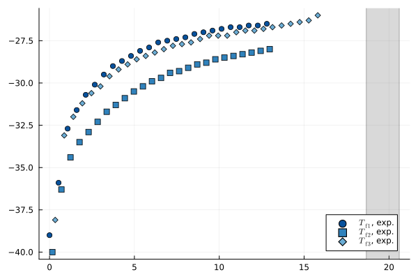
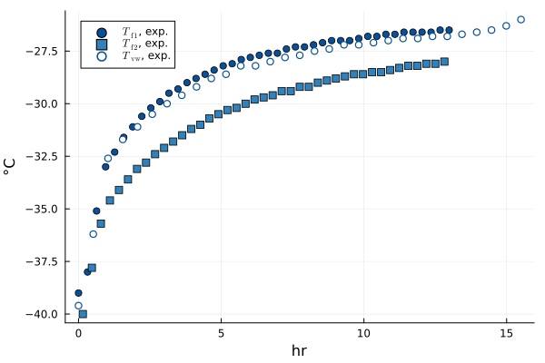
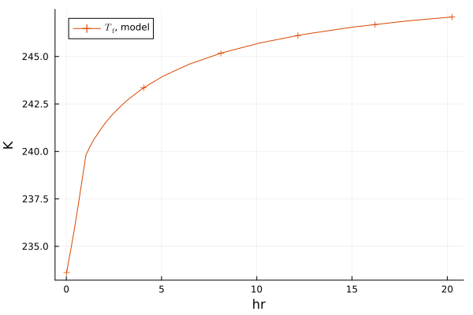

Imports
LyoPronto is this package. It reexports several other packages, so after using LyoPronto, you have effectively also done using Unitful and a few others.
using LyoProntoThese are other packages that I use in the test suite, but you can use others in their place. TypedTables provides a lightweight table structure, not as broadly flexible as a DataFrame but great for our needs
using TypedTables, CSVPlots is a frontend for several plotting packages, and its companion package StatsPlots has a very nice macro I like.
using Plots
using StatsPlots: @df
using LaTeXStringsFor dealing with parameter structs and making copies, Accessors provides the @set and @reset macros
using AccessorsNote on recipes
All of the below recipes are implemented with the Plots.jl recipe system.
One feature is that each of these functions has a version that produces a new plot and one that modifies an existing plot which differ by a bang: exptfplot(...) produces a new plot, while exptfplot!(...) adds to an existing plot.
Another is that you can pass any Plots keyword arguments to any of the plot calls, such as to override the default colors or labels provided by the recipes.
Read Process Data
# Data start at 8th row of CSV file.
# This needs to point to the right file, which for documentation is kinda wonky
procdata_raw = CSV.read(joinpath(@__DIR__, "..", "..", "example", "2024-06-04-10_MFD_AH.csv"), Table, header=8)
t = uconvert.(u"hr", procdata_raw.CycleTime .- procdata_raw.CycleTime[1])
# At midnight, timestamps revert to zero, so catch that case
for i in eachindex(t)[begin+1:end]
if t[i] < t[i-1]
t[i:end] .+= 24u"hr"
end
end
# Some of the dispatches don't like if time is not a float
t = float.(t)
# Rename the columns we will use, and add units
procdata = map(procdata_raw) do row
# In the anonymous `do` function, `row` is a row of the table.
# Return a new row as a NamedTuple
(pirani = row.VacPirani * u"mTorr",
cm = row.VacCPM * u"mTorr",
T1 = row.TP1 * u"°C",
T2 = row.TP2 * u"°C",
T3 = row.TP4 * u"°C", # Quirk of this experimental run: TP3 slot was empty
Tsh = row.ShelfSetPT * u"°C",
phase = row.Phase # identify whether freezing, primary drying, or secondary
)
end
procdata = Table(procdata, (;t)) # Append time to table
# Count time from the beginning of experiment
pd_data = filter(row->row.phase == 4, procdata)
tstart_pd = pd_data.t[1]
pd_data.t .-= pd_data.t[1]
t_end = identify_pd_end(pd_data.t, pd_data.pirani, Val(:onoff))
T_shelf_0 = -40.0u"°C" |> u"K" # initial shelf temperature, in Kelvin for math reasons
T_shelf_final = -10.0u"°C" |> u"K" # final shelf temperature
ramp_rate = 0.5 *u"K/minute" # ramp rate
# Set points, followed, by ramp rate, followed by hold times if there are multiple ramps
Tsh = RampedVariable([T_shelf_0, T_shelf_final], ramp_rate)
# Single set point with no ramps
pch = RampedVariable(100u"mTorr")RampedVariable(100 mTorr)Cycle Data Recipes
Plots provides a very convenient macro @df which inserts table columns into a function call, which is very handy for plotting. We will use this liberally.
Pressure plotting and end of drying
@df pd_data exppplot(:t, :pirani, :cm, ("Pirani", "CM"))
tendplot!(t_end)
@df pd_data exppplot(:t, :cm, :pirani, ("cap", "pir"))
tendplot!(t_end[1])Temperature plotting
@df procdata exptfplot(:t, :T1, :T2, nmarks=40, sampmarks=true, linealpha=0.2)
@df procdata exptvwplot!(:t, :T3, nmarks=30, sampmarks=true, linealpha=0.2)
@df pd_data exptfplot(:t, :T1, :T2, labsuffix = " prod")
@df pd_data exptvwplot!(:t, :T3, labsuffix = " vial")
Plot all cycle data at once with a slick recipe
twinx(plot(xunit=u"hr",))
cycledataplot!(procdata, (:T1, :T2, :T3), :Tsh, (:pirani, :cm), pcolor=:green, nmarks=30)
plot!(subplot=1, legend=:left)
plot!(subplot=2, ylim=(0, 200), legend=:bottomright)
If you want more granular control, you can expand this into its component pieces:
# set up plot
twinx(plot())
# plot data
@df procdata plot!(:t, :Tsh, color=:black, label=L"T_\mathrm{sh}", lw=2, subplot=1)
@df procdata exptfplot!(:t, :T1, :T2, :T3, lw=2, subplot=1, nmarks=30)
# style the axes
plot!(subplot=1, xlabel="Time", ylabel="Temperature", ygrid=true, legend=:left)
# plot on secondary axis
@df procdata exppplot!(:t, :pirani, :cm, ("Pirani", "CM"), c=:green, subplot=2)
# style second axis
plot!(subplot=2, ylabel="Pressure", foreground_color_axis=:green, bordercolor=:green,
seriescolor=:green)
plot!(subplot=2, ylim=(0, 200), legend=:bottomright)Fitting Object Recipes
As a reminder, the PrimaryDryFit object is a container for the data we will use in fitting–no actual iterations are happening yet. This object has a plot recipe, useful for examining what you are feeding to the fit:
fitdat_all = @df pd_data PrimaryDryFit(:t, (:T1[:t .< 13u"hr"],
:T2[:t .< 13u"hr"],
:T3[:t .< 16u"hr"]);
t_end)
plot(fitdat_all, nmarks=30)
If T3 were instead a vial wall temperature measurement and we don't want the optimizer to take drying time into account we could provide and plot it as such.
# Note that we pass T1 and T2 in a tuple as frozen temperatures, then T3 as a next argument
fitdat_vw = @df pd_data PrimaryDryFit(:t, (:T1[:t .< 13u"hr"],
:T2[:t .< 13u"hr"]);
Tvws=:T3[:t .< 16u"hr"],)
plot(fitdat_vw, nmarks=40)
In lack of a better place, it is also worth mentioning that RampedVariable structs have a plotting recipe as well. Since the end time isn't specified by the struct, specify it in the plot recipe.
plot(Tsh, tmax=5u"hr")plot(pch)
Example models
Conventional lyophilization
# Vial geometry
# Ran with a 10mL vial, not strictly a 10R but with similar dimensions
Ap, Av = π.*get_vial_radii("10R") .^ 2
# Formulation parameters
csolid = 0.05u"g/mL" # g solute / mL solution
ρsolution = 1u"g/mL" # g/mL total solution density
# Previously fitted values for Rp
R0 = 0.93u"cm^2*Torr*hr/g"
A1 = 21.1u"cm*Torr*hr/g"
A2 = 1.2u"1/cm"
Rp = RpFormFit(R0, A1, A2)
# Fit value for heat transfer coeff
Kshf = ConstPhysProp(13.9u"W/m^2/K")
# Fill
Vfill = 3u"mL"
hf0 = Vfill / Ap
# Cycle parameters
po = ParamObjPikal([
(Rp, hf0, csolid, ρsolution),
(Kshf, Av, Ap),
(pch, Tsh)
]);
prob = ODEProblem(po)
sol_conv = solve(prob, Rodas3());
# Make some alternate versions for showing in plots
po_alt1 = @set po.Kshf.val = 16u"W/m^2/K"
po_alt2 = @set po.Kshf.val = 10u"W/m^2/K"
sol_calt1 = solve(ODEProblem(po_alt1), Rodas3())
sol_calt2 = solve(ODEProblem(po_alt2), Rodas3());Microwave-assisted lyophilization
A few more physical properties and fit parameters need to be provided:
cpf = LyoPronto.cp_ice
cpv = LyoPronto.cp_gl
mv = get_vial_mass("10R")
mf0 = Vfill * ρsolution
# Microwave field-related parameters
f_RF = 8u"GHz"
epp_f = LyoPronto.ϵppf
epp_w = LyoPronto.epp_gl
# Fit parameters
Bf = 2.0e7u"Ω/m^2"
Bvw = 0.9e7u"Ω/m^2"
Kvwf = 2.4u"W/K/m^2"
# Microwave power per vial
P_per_vial = RampedVariable(10u"W"/17 * 0.54) # actual input power / vial
po_rf = ParamObjRF((
(Rp, hf0, csolid, ρsolution),
(Kshf, Av, Ap),
(pch, Tsh, P_per_vial),
(mf0, cpf, mv, cpv),
(f_RF, epp_f, epp_w),
(Kvwf, Bf, Bvw),
))
prob = ODEProblem(po_rf)
sol_rf = solve(prob, Rodas3());Plot Recipes for Solution Objects
For conventional drying, we only need to plot temperatures of the frozen layer:
modconvtplot(sol_conv, sampmarks=true)
We can show multiple solutions at once:
modconvtplot(sol_conv, sol_calt1, sol_calt2)"/home/runner/work/LyoPronto.jl/LyoPronto.jl/docs/build/generated/recipe_multipikal.svg"
For microwave-assisted drying, we also need to plot vial wall temperatures:
modrftplot(sol_rf, sampmarks=true)This page was generated using Literate.jl.